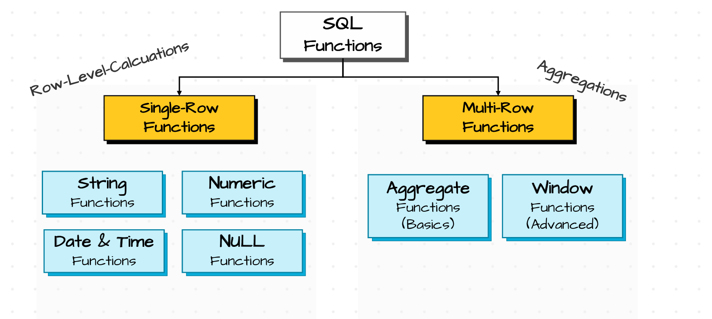

SQL Functions#
Introduction to SQL Functions#
In real world, Data created by source systems never be cleaned most of the times. it would be messy such as text is standardized properly that means some values are in capitals and some are in small letters. Date values are wierd which means some data values are in string format and some are not in standard date format. If the data is actually like this then we cannot perform analysis on these data and even we perform analysis we might get incorrect results.
So if we want to perform analysis on these data, then we have perform some data cleaning and transformation steps inorder to standardize the data.
To perform these data cleaning and transformation steps, SQL provides functions such as String Functions, Number Functions, Date & Time Functions, Null functions and CASE-WHEN statement.
SQL Functions#
A function is a built in code in sql which accepts an input value, processes it and returns a value as output.
In sql, we can categorize these functions into two categories. Those are Singe Row Functions and Multi-Row Functions.
Single Row Functions : Single Row Functions are nothing but a function which takes single row as input and returns a value as an output. For example function LOWER() which actually takes a text contnet from single row and convert that into lowercase and return that lowercase text.
Multi Row Functions : Multi Row Functions are nothing but the functions which takes more than one row as input and returns a value as an output. For example if you consider function SUM() which takes multiple row values as input and returns sum of those values as output.
SQL Functions can be nested which means we put one function inside anothor function. For example consider this LOWER(LEFT(‘Maria’,2)) -> ‘ma’. Here first LEFT() function 2 charecters from left side and LOWER() function takes that value as input and convert it into lowercase.
As we know SQL functions are two types which are Row Level Functions and Multi Row Functions. Single Row Functions are mainly used for data cleaning . Major Single Row Functions are String Functions, Number Functions, Date & Time Functions, NULL Functions etc. Multi Row Functions majorly used for Data analysis such as Aggregate Functions, Window Functions etc.

SQL Functions Hierarchy